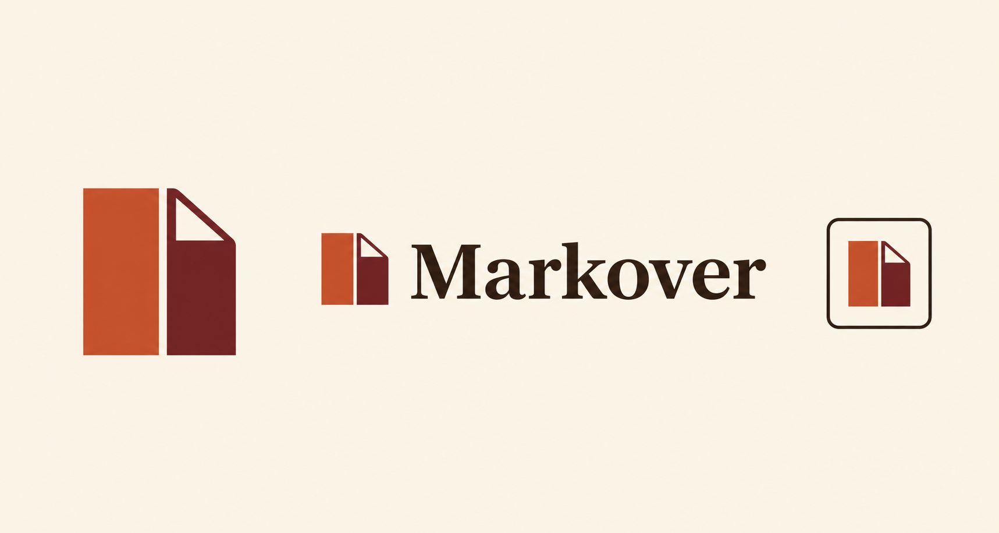
Pinned
01
Warm editorial
42:58 panes
Editorial serif
Original favorite
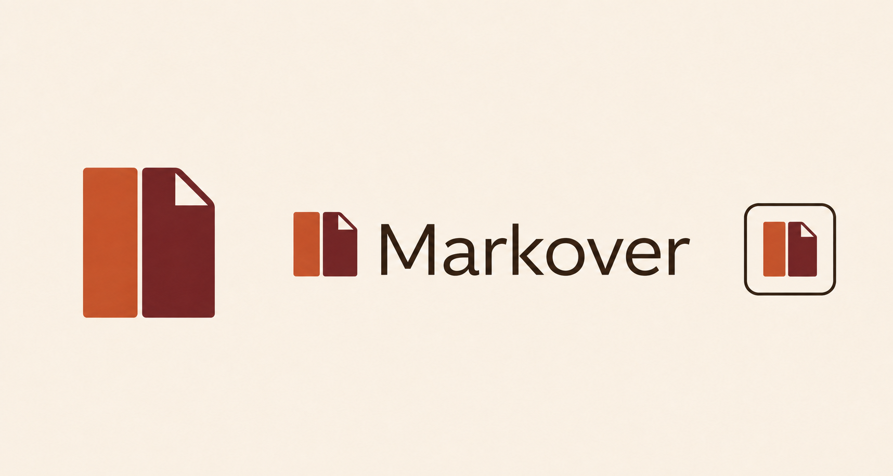
02
Warm humanist
50:50 panes
Nordic humanist sans
Taller
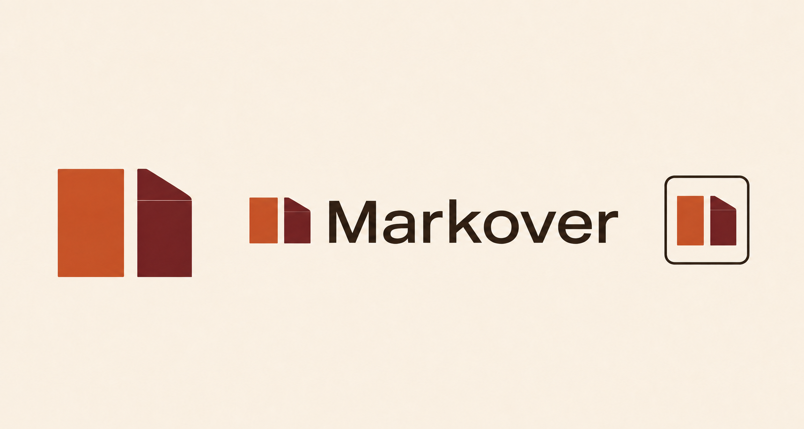
03
Warm grotesk
58:42 panes
Neutral neo-grotesk
Shorter + wider
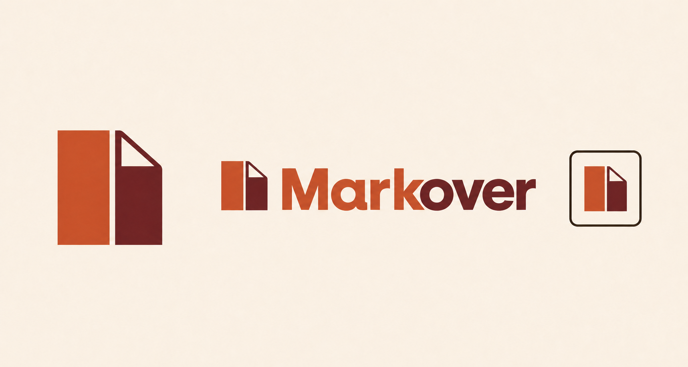
10
Warm two-tone condensed
Pinned shape
Condensed grotesk
Touching k/o
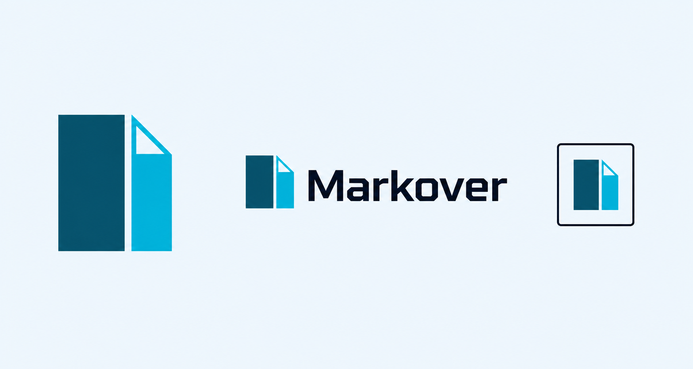
Pinned
04
Ocean technical
65:35 panes
Technical grotesk
Original favorite
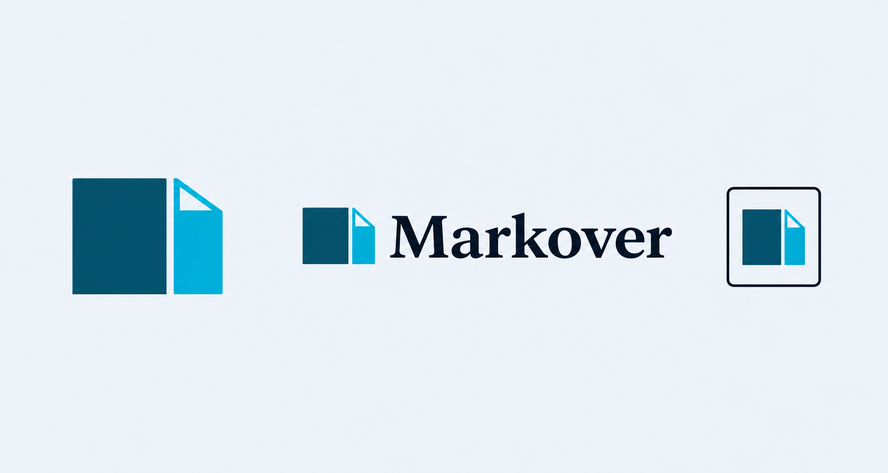
05
Ocean editorial
55:45 panes
Editorial serif
Shorter + broader
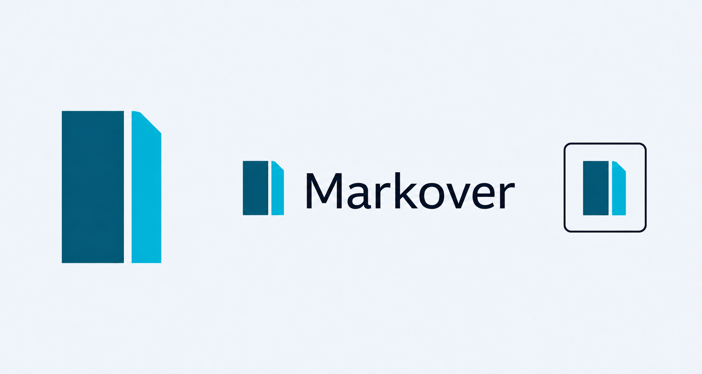
06
Ocean humanist
65:35 panes
Nordic humanist sans
Taller + calmer
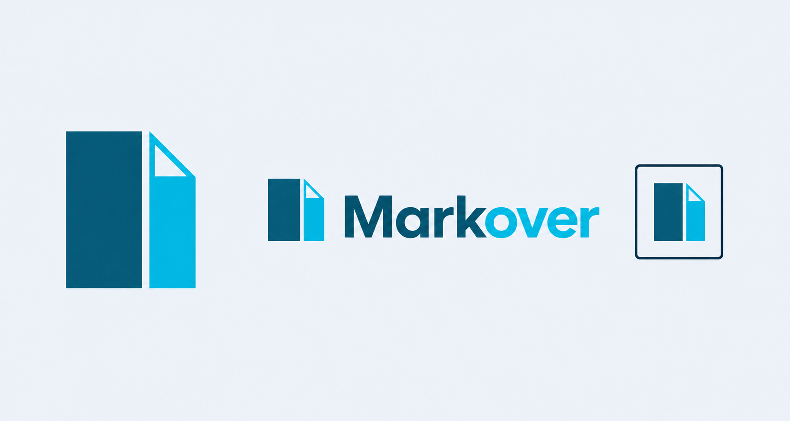
11
Ocean two-tone condensed
Pinned shape
Condensed grotesk
Touching k/o
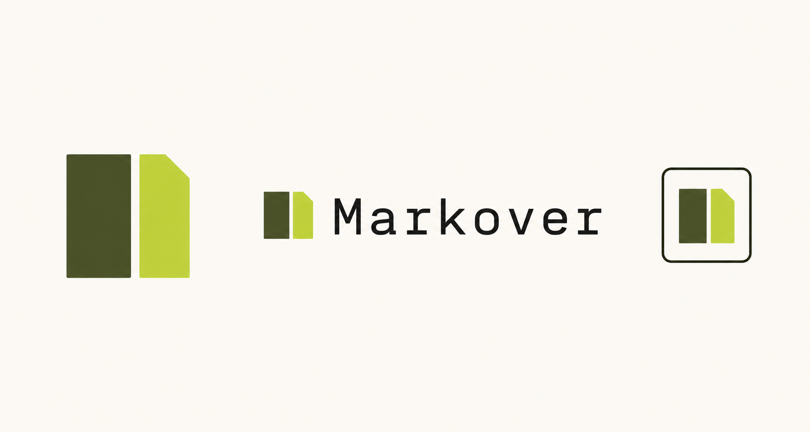
Pinned
07
Olive mono
Near-square panes
Light monospace
Original favorite
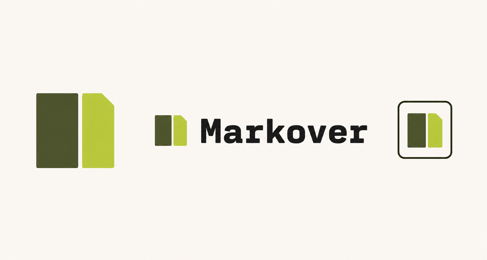
08
Olive heavy mono
50:50 panes
Heavy monospace
Tighter tracking
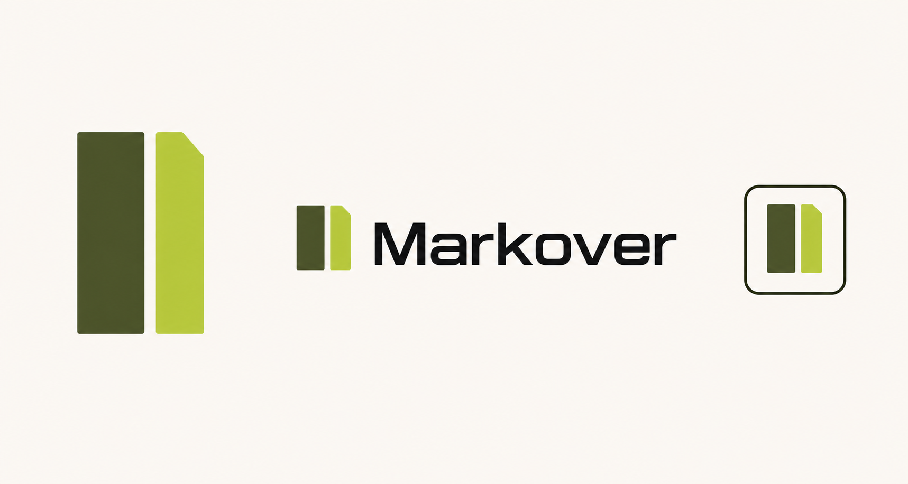
09
Olive technical
62:38 panes
Technical grotesk
Taller + sharper
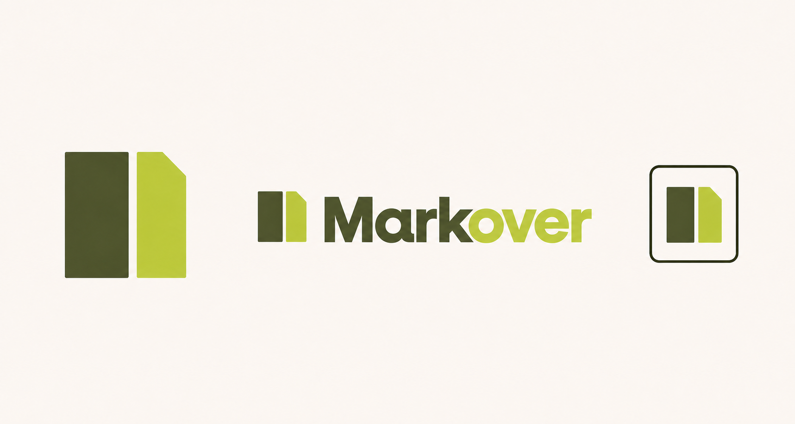
12
Olive two-tone condensed
Pinned shape
Condensed grotesk
Touching k/o
Markover — pinned Swiss panes finalistsSelect any board to inspect the full-resolution artwork.
{kind=link}
{kind=link}
{kind=link}
{kind=link}
{kind=link}
{kind=link}
{kind=link}
{kind=link}
{kind=link}
{kind=link}
{kind=link}
{kind=link}